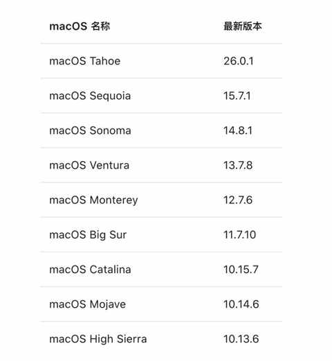
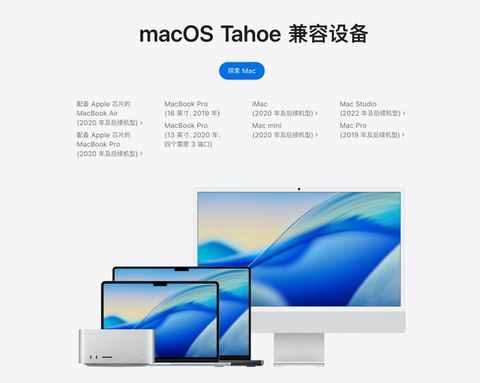
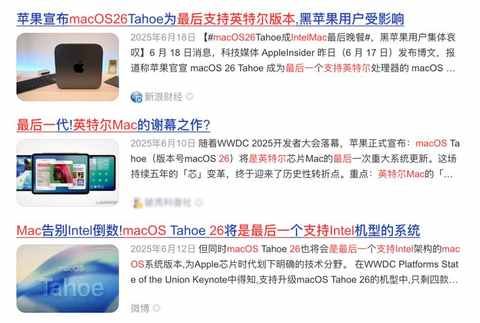
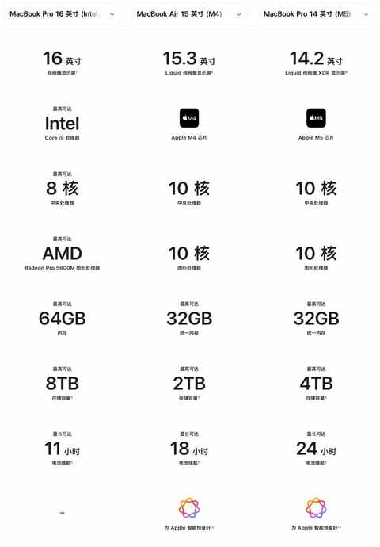
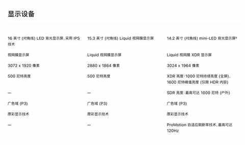
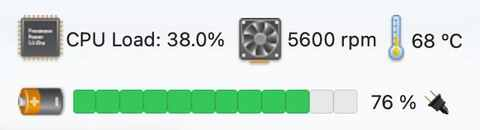
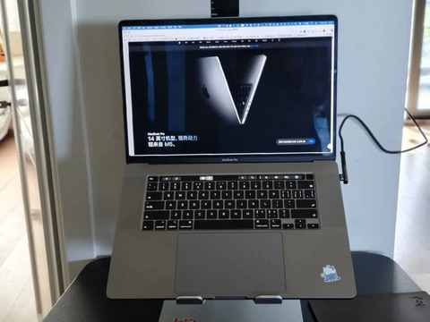
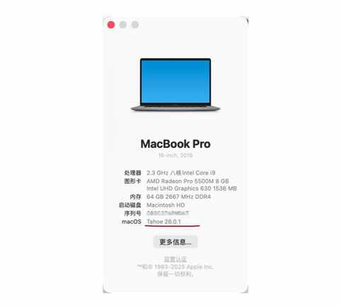
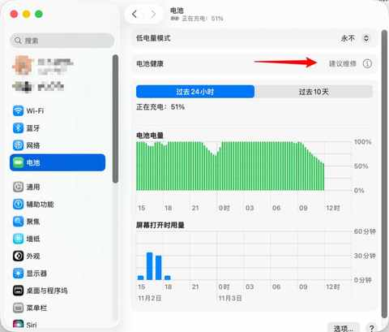

别慌！和所有Intel版Mac用户共享：3个让我们继续用的理由和2个续命秘籍
一、购于 2020 年的 Intel 版 Macbook Pro
我是在 2020 年 8 月份买的这款2019 年款 Macbook Pro，而当年的年底便发布了 M 系列芯片的 Macbook Pro，当时的心情一度十分复杂，买到绝版了。
在上个月终于把这款 Intel 芯片的 Macbook Pro 的 系统升级成了最新的 macOS Tahoe。

是真的后悔了，堪比在 2020 年那次买了最后一代 Intel芯片的 Macbook Pro！
第一个版本超级卡，后面系统更新了之后好了一些但依然没有前几个版本系统流畅，或许 Intel 版本的 Mac真的要被放弃了。

带着这样的猜测，只是做了简单检索，果然 macOS Tahoe就是最后一代支持 Intel 版本的 Mac的系统。


在官网对比了具体配置之后，发现我现在用的这款 Macbook Pro 16寸版本除了处理器的绝对短板之外，其他的配置完全是足够用的，稍作调整和优化继续用完全不是问题。


就个人五年多的使用感受来说，这款电脑最大的缺点是两个：发热和续航。

轻轻松松温度就能逼近或超过 70 度，如果是夏天用那温度上来的更快。
续航方面也是不遑多让，这款 Intel 芯片的能耗表现堪称灾难！
带出去用的话，充电线和充电头是必须带上的。
虽然一直很诟病这两个缺点，但日常使用中并没有其他硬伤和体验很差的地方，对我而言依然是一款生产力工具。

二、 继续用的 3 个理由
1️⃣ 适配使用场景
由于我是居家办公，主要是在家用电脑，无需担心续航问题。
主要用来看视频和写公众号，最常用的软件是浏览器，所以当时买的时候特地选的是 64g 内存的版本。
平时使用大多时候会接上电源和显示器，这种时候笔记本都是闭合的状态。
偶尔要带出去用，一定会带上充电头和充电线。
2️⃣ 性能依然过剩
五年前是完全没有想过，在五年后的当下这款电脑的性能依然是过剩的。

当然啦，这个是基于我的使用习惯和场景，如果你需要在本地跑 Ai 大模型，那确实需要用最新版本的芯片，然后选一个大满配。
至于风扇的声音，早就适应了，如果哪天风扇没啥声音了倒可能需要几天适应下，后续也准备自己看视频清理清理风扇的积灰。
3️⃣ 两个优点
① 能安装双系统
M 系列芯片的 Mac 只能通过虚拟机运行 Windows，但 Intel 芯片的 Mac是可以安装双系统的。
等过个三年娃上初中了，这款电脑也能给他用，如果 macOS 用不习惯可以装上 Windows 系统。
② 屏幕无刘海
虽然大多数时候都是接上显示器使用，但是有刘海和没有刘海的差别还是有的，一整块屏幕的视觉感受上会更舒适。
三、 再战 5 年的 2 个续命秘籍
1️⃣ 换电池 或 买充电宝
使用 5 年多的 Macbook Pro 大多电池都已经和我这边显示的一样了，是【建议维修】的状态。

丰俭由人，每个人根据自身情况做决策就行了。
一块第三方品牌的电池费用在 560 多，安装费用一般在 150 左右，总计花费在 700元上下。
一款能给笔记电脑充电的充电宝价格范围在 200-300 元这个区间，一块新电池约等于 3 个充电宝。
如果和我一样很少带笔记本出门办公，买一个充电宝偶尔应急即可。
如果你经常需要把笔记本带出去使用，那换一块新的电池体验会更好。
2️⃣ 别升级到最新的 macOS Tahoe
最新的系统绝对没有针对 Intel 芯片做特别的优化，各种 UI 上的变化反而增加了不少能耗。
一定别升级到最新版本的系统，如果再更新两个版本依然是现在这样情况的话，我也会备份好数据后，降级到上一个版本的系统。
四、结语
在充分了解自身需求的当下，已经不再追求极致的性能和新的体验，会更讲究工具和需求的匹配度。
如果没有物理损伤的话，这款 2019 年款 Intel芯片的 Macbook Pro肯定能再战 5 年，用足 10 年！
如果你和我一样，用的依然是 I ntel芯片的 Macbook Pro，希望这篇文章能给到你一些参考。
近期文章
老车主看了极氪7X的焕新版之后：情绪稳定！
连续两个月跑量超200km：我的3个意外收获！
中年减肥成功2年后，才发现这5个坑当初要是有人点醒我该多好！
日更的第60天，我似乎掉进“选题陷阱”：面对500+备选题，下笔反而更难？！
中年减肥成功2年后，才发现维持体重靠的不是毅力，而是这5个微习惯
一个中年男人消费观的 3 个转变
8年驾龄复盘：新手期的每一次手忙脚乱，都成了现在我安全驾驶的“肌肉记忆”
一个中年人的2025年桐庐半马赛后复盘：我的 5 个收获
一个中年男人的140次发文，换来第一篇的10万+
为什么说放弃Apple Watch很容易，而真正考验人的是下一块智能手表的选择？